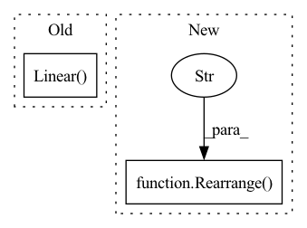

Pattern ID :1789

Before Change
self.to_q = nn.Linear(
in_features=features, out_features=mid_features, bias=False
)
self.to_kv = nn.Linear(
in_features=context_features, out_features=mid_features * 2, bias=False
)
self.attention = AttentionBase(
features, num_heads=num_heads, head_features=head_features
)
After Change
)
self.to_out = nn.Sequential(
Rearrange("b t c -> b c t"),
Conv1d(
in_channels=channels,
out_channels=channels,
In pattern: SUPERPATTERN
Frequency: 3
Non-data size: 2
Instances
Fragment ID: 4455843
Project Name: archinetai/audio-diffusion-pytorch
Commit Name: d60eefa60042962a43a5ece9cc434cb0e076d020
Time: 2022-09-25
Author: flavio.schneider.97@gmail.com
File Name: audio_diffusion_pytorch/modules.py
M Class Name: CrossAttention
N Class Name: Transformer1d
M Method Name: __init__(7)
N Method Name: __init__(0)
M Parent Class: nn.Module
N Parent Class: nn.Module
M File Name: audio_diffusion_pytorch/modules.py
N File Name: audio_diffusion_pytorch/modules.py
M Start Line: 500
M End Line: 514
N Start Line: 436
N End Line: 475
'>
Before Change
self.attend = nn.Softmax(dim = -1)
self.dropout = nn.Dropout(dropout)
self.to_q = nn.Linear(dim, inner_dim, bias = False)
self.to_kv = nn.Linear(dim, inner_dim * 2, bias = False)
self.to_out = nn.Sequential(
nn.Linear(inner_dim, dim),
After Change
self.num_patches = num_patches
self.to_patch_embedding = nn.Sequential(
Rearrange("b c (h p1) (w p2) -> b h w (p1 p2 c)", p1 = patch_height, p2 = patch_width),
nn.LayerNorm(patch_dim),
nn.Linear(patch_dim, dim),
nn.LayerNorm(dim),
'>
Fragment ID: 4455846
Project Name: lucidrains/vit-pytorch
Commit Name: 9a8e509b27da763eed0645183501f7582eb4132d
Time: 2023-03-07
Author: lucidrains@gmail.com
File Name: vit_pytorch/mp3.py
M Class Name: CrossAttention
N Class Name: ViT
M Method Name: __init__(1)
N Method Name: __init__(5)
M Parent Class: nn.Module
N Parent Class: nn.Module
M File Name: vit_pytorch/mp3.py
N File Name: vit_pytorch/mp3.py
M Start Line: 41
M End Line: 54
N Start Line: 109
N End Line: 133
'>
Before Change
// proposed in https://arxiv.org/abs/2110.11316 (CLOOB)
self.extra_latent_projection = extra_latent_projection
self.to_text_latent_extra = nn.Linear(dim_text, dim_latent, bias = False)
self.to_visual_latent_extra = nn.Linear(dim_image, dim_latent, bias = False)
def forward(
self,
After Change
RearrangeImage(),
nn.Conv2d(dim_image, dim_image, 4, stride = 2, padding = 1, bias = False, groups = dim_image),
nn.Conv2d(dim_image, dim_latent, 1),
Rearrange("b c h w -> b (h w) c")
)
else:
self.to_visual_latent = nn.Linear(dim_image, dim_latent, bias = False)
'>
Fragment ID: 4455845
Project Name: lucidrains/x-clip
Commit Name: c361ef1743ed0d0d4a8631f0afa6ad08bbbc2ea4
Time: 2021-12-10
Author: lucidrains@gmail.com
File Name: x_clip/x_clip.py
M Class Name: CLIP
N Class Name: CLIP
M Method Name: __init__(0)
N Method Name: __init__(1)
M Parent Class: nn.Module
N Parent Class: nn.Module
M File Name: x_clip/x_clip.py
N File Name: x_clip/x_clip.py
M Start Line: 196
M End Line: 248
N Start Line: 243
N End Line: 273